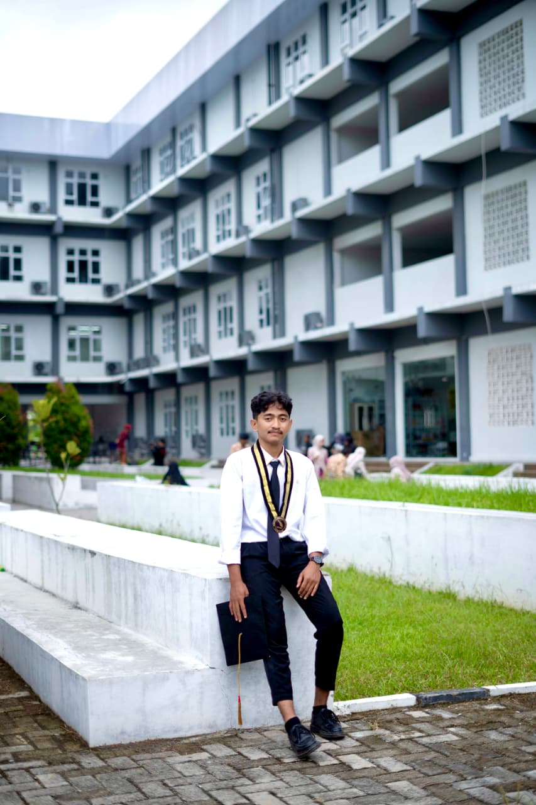

GIS Analyst & Environmental Data Specialist
Lulusan S1 Sains Lingkungan Kelautan dengan spesialisasi dalam pemetaan digital, analisis data spasial, dan penginderaan jauh untuk solusi lingkungan berkelanjutan.

Saya adalah lulusan Program Studi S1 Sains Lingkungan Kelautan dari Institut Teknologi Sumatera dengan IPK 3.53/4.00. Memiliki minat kuat pada pemetaan digital dan analisis data lingkungan berbasis teknologi.
Pemahaman mendalam tentang GIS, pengolahan data spasial, dan penginderaan jauh untuk mendukung kajian pesisir dan kelautan. Terbiasa bekerja secara analitis, teliti, dan cepat belajar, serta tertarik mengembangkan solusi berbasis data untuk pengelolaan lingkungan.
Tahun Pengalaman
Proyek Selesai
Klien Puas
Institut Teknologi Sumatera
S1 Sains Lingkungan Kelautan
IPK: 3.53/4.00
September 2021 - April 2026
Lampung Selatan, Indonesia
+62 812 8058 2683
arieframadhann29@gmail.com
Parangtritis Geomaritime Science Park Yogyakarta
Pocha Gang, Lampung Selatan
Global Jaya Mandiri, Palembang
Institut Teknologi Sumatera
Fakultas Sains ITERA
Himpunan Mahasiswa Lingkungan Kelautan
Himpunan Mahasiswa Lingkungan Kelautan
First Gathering Sains Lingkungan Kelautan
Sains Lingkungan Kelautan
Analisis spasial pesisir dan kelautan menggunakan ArcGIS dan Google Earth Pro
Pengoperasian drone untuk survei dan pemrosesan data geospasial
Pengolahan data dan analisis statistik menggunakan MATLAB, Python, dan SPSS
Eksplorasi ilmiah Anak Krakatau dengan pengambilan data lapangan kelautan
Produksi video promosi untuk Badan Informasi Geospasial (BIG)
Proyek penanaman mangrove dan pengelolaan lingkungan berkelanjutan
+62 812 8058 2683
arieframadhann29@gmail.com
Lampung Selatan, Indonesia
linkedin.com/in/Arief-Ramadhan